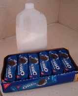
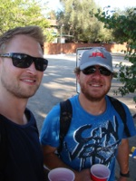
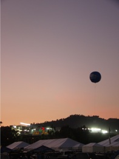
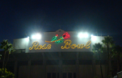
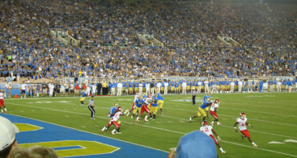
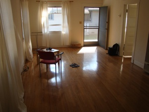
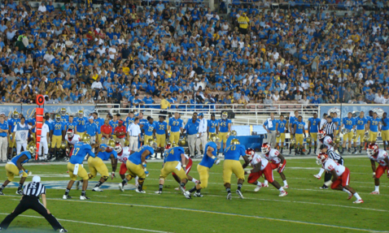

Integrating the best I’ve learned

Oreos and Football
I have now lived a bit more than a week in our new home. I won’t say I have gotten use to actually living here yet but it helps having the same place to come home to everyday. And it’s not that I’m not trying to fit in and ‘integrate’ myself. I went grocery shopping the other day and part of what I came back with was a whole bunch of Oreos (it’s cheaper if you buy larger amounts so I had no choice ;) and a gallon of D-vitamin enriched low fat milk. A great late night treat... and I needed milk for my rolled oats either way - yeah I’m eating them with milk like in DK and I’m not turning them into oat meal... yet.

Besides Oreos and milk, omelets, sandwiches, and other great american ‘specialties’ I did a proper effort to integrate myself into the american sport no. 1 this weekend. It’s not a big secret that I already like american football.  Unfortunately I don’t have a tv yet so I haven’t been able to follow the first couple of rounds of the NFL season as closely as I would have liked to. But what better way to compensate for that than watching a couple of games live? Friday night the local football team, Santa Barbara City College’s (SBCC) Vaqueros were playing their first home game of the season. The stadium is only 20 min walk from home and is located right on the west beach of town.
Unfortunately I don’t have a tv yet so I haven’t been able to follow the first couple of rounds of the NFL season as closely as I would have liked to. But what better way to compensate for that than watching a couple of games live? Friday night the local football team, Santa Barbara City College’s (SBCC) Vaqueros were playing their first home game of the season. The stadium is only 20 min walk from home and is located right on the west beach of town. There is only one stands in one side of the stadium so one can enjoy the ocean view if the quality of the football is too low - it’s not a secret to anyone that SBCC is not the best football team in the country; but still. It only cost me 5$ to get in and it was a great way to get aquatinted with football live before the ‘big game’ of the weekend. So having watched SBCC kick the hell out of Compton I was ready for the full experience saturday.
There is only one stands in one side of the stadium so one can enjoy the ocean view if the quality of the football is too low - it’s not a secret to anyone that SBCC is not the best football team in the country; but still. It only cost me 5$ to get in and it was a great way to get aquatinted with football live before the ‘big game’ of the weekend. So having watched SBCC kick the hell out of Compton I was ready for the full experience saturday.
Saturday morning I got up fairly early and took a Greyhound bus to L.A. The plan was actually to take an Amtrak train but as this is the US and the country is basically build for cars it actually took the same time with bus as with the train. And since the Greyhound tickets were approximately 1/3 of the price of Amtrak tickets (only 22$ for a return Santa Barbara - L.A.) I decided to do that instead. I can definitely recommend to use Greyhound as a means of traveling. To my disappointment (kind of) it was not one of the metallic old-school buses you see in the movies we drove with.

It’s was a standard tourist bus with air condition and a greyhound on the side. Hence, the comfort was pretty okay and as it’s cheap and takes the same time as the train it was pretty convenient. After 2.5 hours on the american roads I got off at the Greyhound terminal in downtown L.A. There JM was waiting to pick me up. We drove back to his place where we hung out for a couple of hours before the rest of the crowd joined. The plan for the day was tailgating at the Rose Bowl Stadium and then UCLA vs Houston. When the others arrived we went to Vons and bought the necessary ingredients for a good tailgate party, i.e., beers, meat, bbq, beers, nachos, salsa, and beers. 
As we were too many to fit in the car JM and I grabbed a couple of plastic cups and some cold beer and walked to the stadium. There we teamed up with the others who already had the bbq going. The atmosphere outside the stadium was awesome. Kind of like Roskilde music festival (with a lot more cars though) where everyone is happy and just looking forward to the big event - in this case the game.At 19ish we headed towards the stadium to watch some football. The stadium was not fully packed so there was only ~50000-60000 spectators. We got pretty good seats (actually they were maybe a bit too close to the field so we sometimes lacked the overview). It was a great experience and needless to say the atmosphere was amazing. The game itself was not extraordinary. It was basically a walk-over for UCLA - actually it was 41-0 before Houston managed to score. But just being there was awesome, and it is definitely not the last time I go to such an event... maybe if I win the lottery I can consider trying to get NFL tickets... well I think I’ll just stick to college football to start with. Then I can enjoy NFL on sundays in bars and when I get my tv and get the cable signal set up (another to-do thing on my list).
It was a great experience and needless to say the atmosphere was amazing. The game itself was not extraordinary. It was basically a walk-over for UCLA - actually it was 41-0 before Houston managed to score. But just being there was awesome, and it is definitely not the last time I go to such an event... maybe if I win the lottery I can consider trying to get NFL tickets... well I think I’ll just stick to college football to start with. Then I can enjoy NFL on sundays in bars and when I get my tv and get the cable signal set up (another to-do thing on my list).


After the match both JM and I were pretty exhausted so instead of joining the few people who went clubbing we just got a ride back to JM’s place (where I had borrowed a bed). Here we enjoyed the nice evening/night and some good whiskey. Today JM drove me to the bus-hub around noon so I could catch my bus back to Santa Barbara.
So after a week where most of the time went with paperwork (e.g., I now got my social security number so I can get paid and I got the internet connection set up at UCSB) it was great with a weekend of Oreos and american football. It’s not at all bad to live in California... even though I still feel like a tourist - it has only been 2.5 weeks.
Cheers,
KBS
Oh by the way -

I bought some (temporary) furniture. The other day there was a block sale where I managed to find a small IKEA table and an old chair for just 4 bucks. Hence, I don’t have to eat on the floor and actually have a place where I can sit down and have dinner. So now we have 1 chair, 1 table and 1 bed... it’s getting better and better ;) Still looking forward to our stuff arriving though!Monday, 17 September 2012
